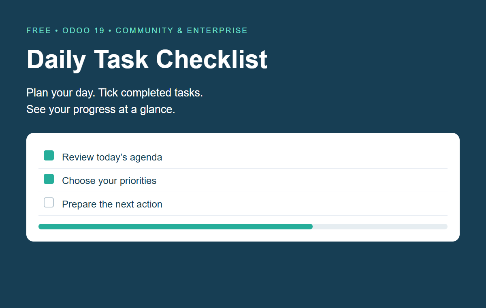
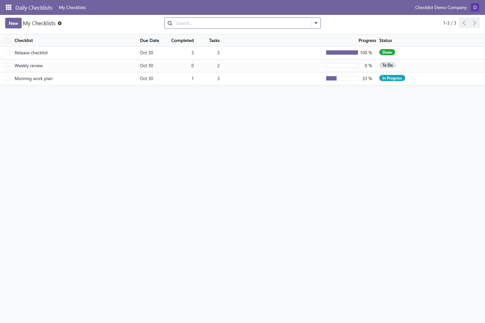
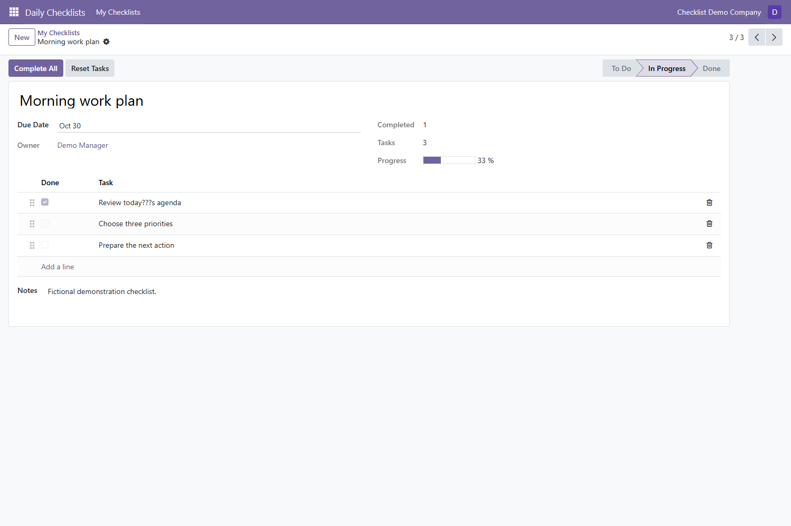

Daily Task Checklist
A small, practical app for organizing your own daily tasks.

Keep daily work organized
- Create personal checklists with due dates and notes.
- Add and reorder tasks; tick each task as it is completed.
- See completed-task counts, progress percentage and To Do / In Progress / Done status.
- Use Complete All or Reset Tasks for a checklist.
- Search checklists, filter open lists and archive completed routines.
- Keep each internal user’s checklists private, within allowed companies.
Get started
- Install Daily Task Checklist.
- Open Daily Checklists → My Checklists → New.
- Enter a checklist title, optional due date and notes, then add tasks.
- Tick Done beside completed tasks or use Complete All.
Inside the app
My Checklists

Checklist tasks

Requirements
Odoo 19 Community or Enterprise. Requires only base. Install on a self-hosted Odoo server or Odoo.sh; standard Odoo Online does not support custom Python addons.
Scope and privacy
This is a free, standalone checklist app. It does not include payroll, billing, accounting, notifications, task sharing or cross-user team management. Records belong to their creator. Superuser administration retains normal Odoo access. The app does not send data to external services and does not require an activation key.
Support
imran.odoo.consultant@gmail.com